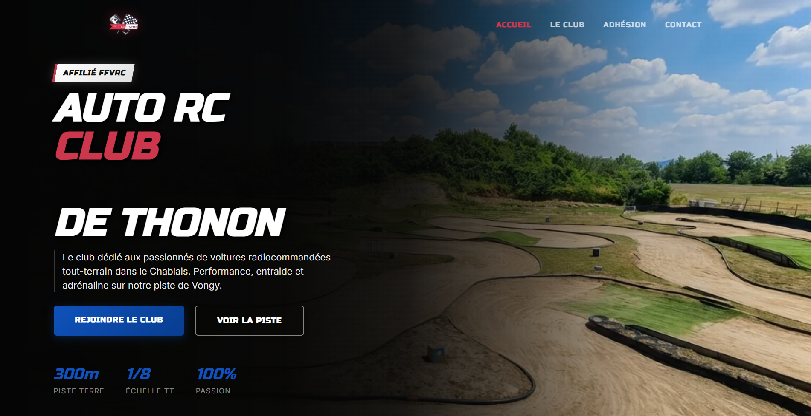

L'ARCT (Association Auto RC Thonon) avait besoin d'un site web rapidement — pas pour des raisons marketing, mais pour un dossier de demande de terrain auprès de la mairie. Délai court, client non-technique, contrainte administrative concrète.
Stack choisi délibérément minimal : HTML/CSS/JS vanilla + PHP uniquement pour le formulaire de contact. Zéro framework, zéro dépendance runtime. Pas par manque de compétence — par pragmatisme : un bénévole non-dev qui hérite du site dans 2 ans doit pouvoir le modifier sans formation.
Sur un site statique, la vraie valeur ajoutée est dans les détails : SEO complet, images optimisées, formulaire sécurisé. Ce sont ces détails qui font la différence entre "ça tourne" et "c'est pro".